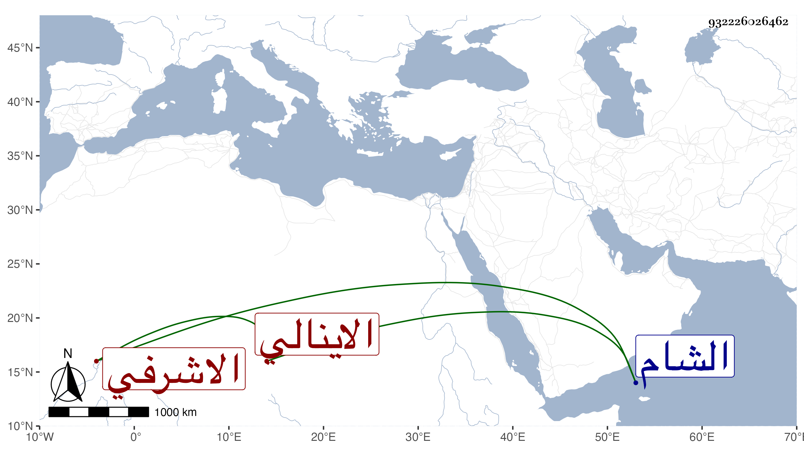

0902Sakhawi.DawLamic.ITO20230111-ara1.EIS1600.932226026462
Biography ID: 932226026462
219
جانبك الاينالي الاشرفي برسباي ، ويعرف بقلقسين . ممن سجن في أول الايام الظاهرية جقمق ثم أطلق وتعلم الكتابة على كبر ثم لا زال يترقى في الامرة واستقر مع تقدمته في الحجوبية الكبرى أيام الظاهر خشقدم ، وحج أمير المحمل في سنة تسع وستين وعمل الاتابكية وكان وهو كذلك ممن أسر في كائنة سوار وشل ابهام يده ثم تخلص وولي نيابة الشام حتى مات في ذي الحجة سنة ثلاث وثمانين ، وكان في الفروسية بمكان .
